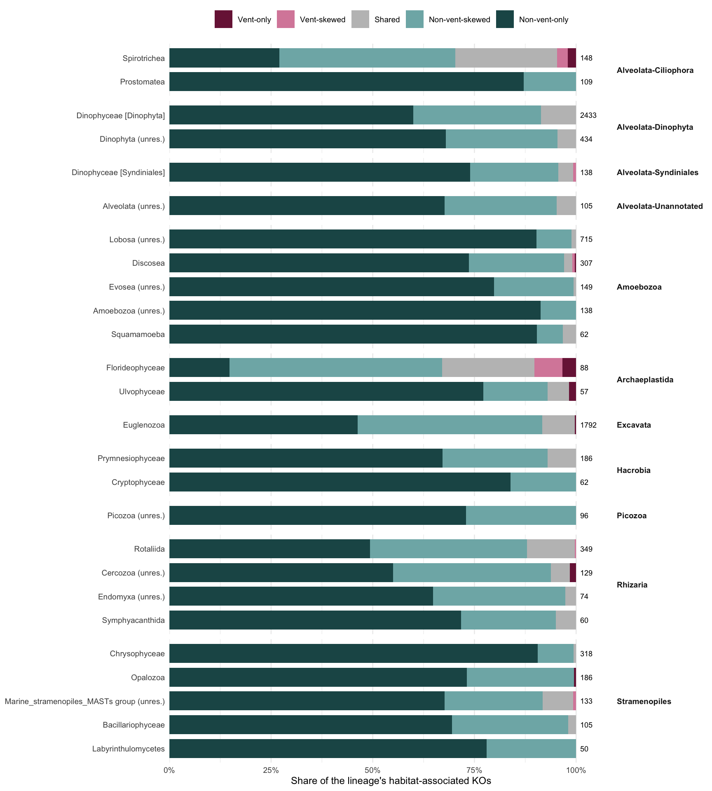
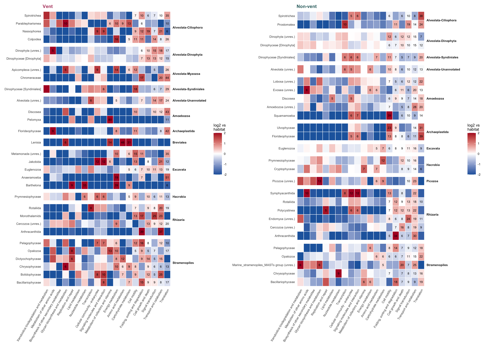
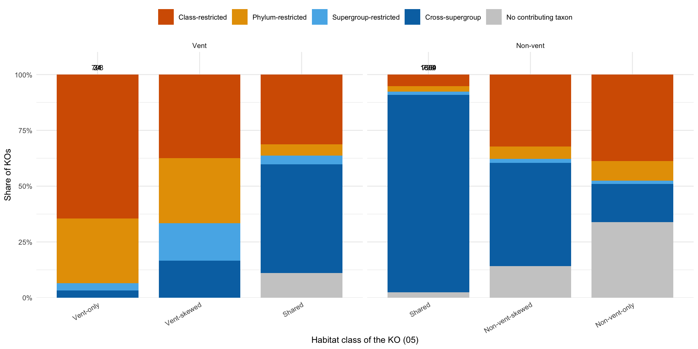
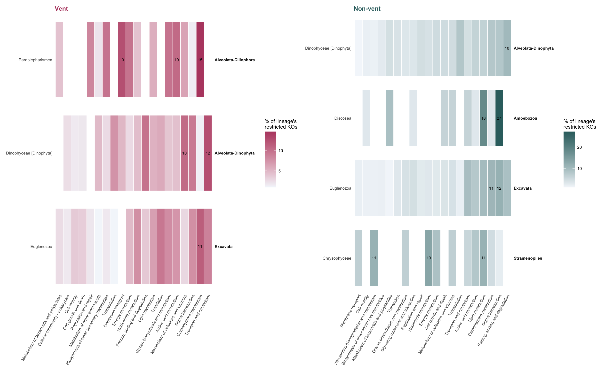
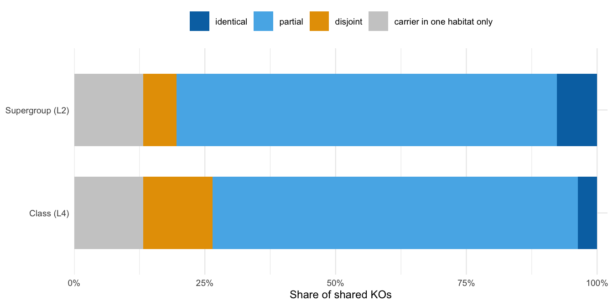

Code
source(if (file.exists("_setup.R")) "_setup.R" else "scripts/_setup.R")Frenemies euk metaT — curated grain 4, vent and non-vent sample units
Hu Lab
October 23, 2026
SKH: new script (2026-10-12), written in response to “04-07 lost focus of the taxa”. Not yet rendered. Each chunk with a
stopifnot()is a self-check; send the error text if one fails.
05 asks which taxa and which KOs belong to each habitat, separately. 06 asks who carries a KO, but only at vents. 05b crosses the two: every class-level taxon × KO pair gets a habitat class, and the pair table feeds four questions.
Rules (config/params.yml, shared with 05, 06 and 07):
pair_min_units (2) units of that habitat. The same rule as 06, applied to non-vent as well. 2 of 13 is a lower bar than 2 of 6, so the grid at 1, 2 and 3 units is reported.taxon_span(), as in 06).below_filter, so nothing is lost.Depth. Vent units are about 5.6-fold shallower than non-vent units. A taxon with a large share will have more pairs clear the per-million floor, so repertoire size follows expression share. Section 1 prints that correlation; read repertoire fractions, not counts, across lineages.
FIELDS_IN_SCOPE <- c("Gorda Ridge", "Von Damm", "Piccard")
CHOSEN_DEPTH <- 4
MIN_TPM <- params$detect_min_tpm
MIN_PER_MILLION <- params$detect_min_per_million
OCC_MIN <- params$occupancy_min_frac
PAIR_MIN_UNITS <- params$pair_min_units
MIN_REPERTOIRE <- 50 # lineages with fewer associated KOs are left off the repertoire figure
MIN_PROFILE_SHARE <- 0.005 # lineages need >= 0.5% mean share in a habitat to get a profile
MIN_RESTRICTED <- 10 # lineages with fewer restricted KOs are left off the restricted-KO figure
N_CATS_SHOWN <- 20 # KEGG level-B categories shown in heatmaps
HABITAT_TABLE <- "output-tables/05_ko_habitat_class.csv" # from 05
TAXON_TABLE <- "output-tables/05_taxon_habitat.csv" # from 05
habitat_pal <- c(Vent = "#b74a70", `Non-vent` = "#346D6E")
class_levels <- c("vent_only", "vent_skewed", "shared", "nonvent_skewed", "nonvent_only")
class_pal <- c(vent_only = "#7A1F45", vent_skewed = "#D98AA8", shared = "grey75",
nonvent_skewed = "#7FB3B4", nonvent_only = "#1F5556")
class_lab <- c(vent_only = "Vent-only", vent_skewed = "Vent-skewed", shared = "Shared",
nonvent_skewed = "Non-vent-skewed", nonvent_only = "Non-vent-only")
span_levels <- c("class", "phylum", "supergroup", "cross_supergroup", "no_carrier")
span_pal <- c(class = "#D55E00", phylum = "#E69F00", supergroup = "#56B4E9",
cross_supergroup = "#0072B2", no_carrier = "grey80")
span_lab <- c(class = "Class-restricted", phylum = "Phylum-restricted",
supergroup = "Supergroup-restricted", cross_supergroup = "Cross-supergroup",
no_carrier = "No contributing taxon")[load_paired] data/processed/paired_L4.RData (built 2026-10-23 09:06; 318,911 rows)units <- paired |>
distinct(unit = sample_unit, vent_bin, field, n_reps) |>
arrange(vent_bin, field, unit)
stopifnot(!anyDuplicated(units$unit), sum(units$vent_bin == "Vent") == 13,
sum(units$vent_bin != "Vent") == 6)
tax_key <- paired |>
distinct(cur_group, cur_supergroup, cur_phylum, cur_L4, resolved_L4) |>
mutate(taxon = taxon_label_unique(cur_L4))
stopifnot(!anyDuplicated(tax_key$cur_L4))
ko_hab <- read_csv(HABITAT_TABLE, show_col_types = FALSE)
tax_hab <- read_csv(TAXON_TABLE, show_col_types = FALSE)
vent_kos <- ko_hab |> filter(habitat_class %in% c("vent_only", "vent_skewed", "shared")) |> pull(ko_id)
nonvent_kos <- ko_hab |> filter(habitat_class %in% c("shared", "nonvent_skewed", "nonvent_only")) |> pull(ko_id)
message(glue("{length(vent_kos)} vent-associated and {length(nonvent_kos)} non-vent-associated KOs (05)"))853 vent-associated and 4261 non-vent-associated KOs (05)One row per class-level taxon × KO pair, with the 05 occupancy rule. This is the table every later section reads.
pair_ue <- unit_expression(paired, c("cur_L4", "ko_id"),
min_tpm = MIN_TPM, min_per_million = MIN_PER_MILLION)
pair_keep <- pair_ue |> filter(detected) |> distinct(cur_L4, ko_id)
pair_ue <- pair_ue |> semi_join(pair_keep, by = c("cur_L4", "ko_id"))
message(glue("{nrow(pair_keep)} taxon x KO pairs detected in at least one unit"))30225 taxon x KO pairs detected in at least one unitpair_hab <- habitat_occupancy(pair_ue, units, c("cur_L4", "ko_id"), OCC_MIN)
pair_tpm <- pair_ue |>
summarise(pair_tpm = sum(tpm), .by = c(cur_L4, ko_id, vent_bin)) |>
pivot_wider(names_from = vent_bin, values_from = pair_tpm, values_fill = 0) |>
rename(tpm_vent = Vent, tpm_nonvent = `Non-vent`)
pair_all <- pair_hab |>
left_join(pair_tpm, by = c("cur_L4", "ko_id")) |>
left_join(tax_key, by = "cur_L4") |>
left_join(ko_hab |> select(ko_id, ko_habitat = habitat_class), by = "ko_id") |>
left_join(tax_hab |> select(cur_L4, taxon_habitat = habitat_class), by = "cur_L4")
stopifnot(!anyNA(pair_all$taxon), max(pair_all$n_det_vent) <= 13, max(pair_all$n_det_nonvent) <= 6)
pairs_assoc <- pair_all |> filter(habitat_class != "below_filter")
pairs_assoc |> count(habitat_class) |> mutate(frac = round(n / sum(n), 3))For results: how many taxon × KO pairs clear the occupancy rule in each habitat class, out of all pairs detected anywhere.
For every lineage, the pairs it carries by pair class. Fractions are of that lineage’s habitat-associated KOs.
repertoire <- pairs_assoc |>
summarise(n_ko = n(),
vent_only = sum(habitat_class == "vent_only"),
vent_skewed = sum(habitat_class == "vent_skewed"),
shared = sum(habitat_class == "shared"),
nonvent_skewed = sum(habitat_class == "nonvent_skewed"),
nonvent_only = sum(habitat_class == "nonvent_only"),
.by = cur_L4) |>
mutate(across(all_of(class_levels), \(x) x / n_ko, .names = "frac_{.col}")) |>
left_join(tax_key, by = "cur_L4") |>
left_join(tax_hab |> select(cur_L4, taxon_habitat = habitat_class, occ_vent, occ_nonvent,
mean_share_vent, mean_share_nonvent), by = "cur_L4") |>
arrange(cur_supergroup, desc(n_ko))
repertoire |>
select(taxon, cur_group, taxon_habitat, n_ko, starts_with("frac_")) |>
mutate(across(starts_with("frac_"), \(x) round(x, 2)))# does repertoire size just follow expression share?
repertoire |>
mutate(n_ko_vent = vent_only + vent_skewed + shared,
n_ko_nonvent = shared + nonvent_skewed + nonvent_only) |>
summarise(rho_vent = cor(n_ko_vent[n_ko_vent > 0], mean_share_vent[n_ko_vent > 0],
method = "spearman"),
rho_nonvent = cor(n_ko_nonvent[n_ko_nonvent > 0], mean_share_nonvent[n_ko_nonvent > 0],
method = "spearman"))For results: Spearman ρ of repertoire size against mean share. If high, say repertoires are compared as fractions and that the counts track expression.
rep_long <- repertoire |>
filter(n_ko >= MIN_REPERTOIRE) |>
select(cur_group, taxon, n_ko, all_of(class_levels)) |>
pivot_longer(all_of(class_levels), names_to = "pair_class", values_to = "n") |>
mutate(pair_class = factor(pair_class, levels = class_levels),
frac = n / n_ko,
taxon = fct_reorder(taxon, n_ko))
fig_repertoire <- ggplot(rep_long, aes(frac, taxon, fill = pair_class)) +
geom_col(width = 0.8) +
geom_text(data = distinct(rep_long, cur_group, taxon, n_ko),
aes(x = 1.01, y = taxon, label = n_ko), inherit.aes = FALSE,
hjust = 0, size = 2.4) +
scale_fill_manual(values = class_pal, labels = class_lab, name = NULL) +
scale_x_continuous(labels = scales::percent, expand = expansion(mult = c(0, 0.08))) +
facet_grid(cur_group ~ ., scales = "free_y", space = "free_y") +
labs(x = "Share of the lineage's habitat-associated KOs", y = NULL) +
theme_minimal(base_size = 9) +
theme(panel.grid.major.y = element_blank(), legend.position = "top",
strip.text.y = element_text(angle = 0, hjust = 0, face = "bold"))
fig_repertoire
# ggsave("figures/05b-repertoire.svg", fig_repertoire, width = 9, height = 10)
Each pair is placed by the 05 class of its taxon and the class of the pair itself.
taxon_by_pair <- pairs_assoc |>
filter(!is.na(taxon_habitat)) |>
count(taxon_habitat, habitat_class) |>
mutate(frac_of_pair_class = n / sum(n), .by = habitat_class)
taxon_by_pair |>
select(-n) |>
pivot_wider(names_from = taxon_habitat, values_from = frac_of_pair_class, values_fill = 0) |>
mutate(across(where(is.double), \(x) round(x, 3)))For results: for pairs in each class, the share carried by vent-only / vent-skewed / shared / non-vent taxa. If vent-only pairs sit mostly on shared taxa, vent specificity is the same lineages expressing different genes. If they sit on vent-only taxa, it is lineage turnover.
Each lineage’s expression is split across level-B categories within each unit where it is detected and averaged over those units (the 05 kegg-leaders rule). The reference is the habitat’s whole-community composition on the same mapped-expression basis. log2_enrich > 0 means the lineage puts more of its expression into that category than the habitat does. A KO in n categories counts 1/n in each.
kegg_long <- paired |>
select(sample_unit, n_reps, vent_bin, field, cur_group, cur_L4, ko_id, scaledTPM) |>
inner_join(brite_map |> select(ko_id, a_description, description, n_cat),
by = "ko_id", relationship = "many-to-many") |>
mutate(scaledTPM = scaledTPM / n_cat)
# habitat reference composition (mapped expression)
ref_comp <- unit_expression(kegg_long, "description") |>
mutate(ref_share = tpm / sum(tpm), .by = unit) |>
select(unit, vent_bin, description, ref_share) |>
complete(nesting(unit, vent_bin), description, fill = list(ref_share = 0)) |>
summarise(ref = mean(ref_share), .by = c(vent_bin, description))
# lineages that get a profile: associated with the habitat and a visible share of it
profile_taxa <- bind_rows(
tax_hab |> filter(occ_vent >= OCC_MIN, mean_share_vent >= MIN_PROFILE_SHARE) |>
transmute(vent_bin = "Vent", cur_L4),
tax_hab |> filter(occ_nonvent >= OCC_MIN, mean_share_nonvent >= MIN_PROFILE_SHARE) |>
transmute(vent_bin = "Non-vent", cur_L4))
profile_taxa |> count(vent_bin)tax_unit <- unit_expression(paired, "cur_L4", min_tpm = MIN_TPM, min_per_million = MIN_PER_MILLION)
detected_taxa <- tax_unit |> filter(detected) |> distinct(unit, cur_L4)
taxon_kegg_unit <- unit_expression(kegg_long |> filter(cur_L4 %in% unique(profile_taxa$cur_L4)),
c("cur_L4", "description")) |>
mutate(taxon_share = tpm / sum(tpm), .by = c(unit, cur_L4)) |>
semi_join(detected_taxa, by = c("unit", "cur_L4"))
lineage_profile <- taxon_kegg_unit |>
select(unit, vent_bin, cur_L4, description, taxon_share) |>
complete(nesting(unit, vent_bin, cur_L4), description, fill = list(taxon_share = 0)) |>
summarise(mean_taxon_share = mean(taxon_share), n_units = n_distinct(unit),
.by = c(vent_bin, cur_L4, description)) |>
semi_join(profile_taxa, by = c("vent_bin", "cur_L4")) |>
left_join(ref_comp, by = c("vent_bin", "description")) |>
left_join(tax_key |> select(cur_L4, cur_group, taxon), by = "cur_L4") |>
left_join(brite_map |> distinct(description, a_description), by = "description") |>
mutate(log2_enrich = log2((mean_taxon_share + 0.001) / (ref + 0.001)))
stopifnot(!anyNA(lineage_profile$taxon))
# for each lineage and habitat, the categories it is most over-invested in
lineage_profile |>
filter(mean_taxon_share >= 0.02) |>
slice_max(log2_enrich, n = 3, by = c(vent_bin, cur_L4)) |>
arrange(vent_bin, cur_group, taxon, desc(log2_enrich)) |>
transmute(vent_bin, taxon, description,
taxon_pct = round(100 * mean_taxon_share, 1), habitat_pct = round(100 * ref, 1),
log2_enrich = round(log2_enrich, 2), n_units)For results: which categories set the major lineages apart from the habitat average, and whether a lineage present in both habitats keeps the same profile. Categories under 2% of a lineage’s expression are not listed, because a log ratio on a tiny share is noise.
top_cats <- ref_comp |> summarise(r = sum(ref), .by = description) |>
slice_max(r, n = N_CATS_SHOWN) |> pull(description)
fig_profile <- function(h) {
d <- lineage_profile |>
filter(vent_bin == h, description %in% top_cats) |>
mutate(description = factor(description, levels = rev(top_cats)),
taxon = fct_reorder(taxon, n_units, .desc = FALSE))
ggplot(d, aes(description, taxon, fill = pmax(pmin(log2_enrich, 2), -2))) +
geom_tile(colour = "white", linewidth = 0.3) +
geom_text(aes(label = if_else(mean_taxon_share >= 0.05, sprintf("%.0f", 100 * mean_taxon_share), "")),
size = 2.2) +
scale_fill_gradient2(low = "#2166AC", mid = "white", high = "#B2182B", midpoint = 0,
limits = c(-2, 2), name = "log2 vs\nhabitat") +
facet_grid(cur_group ~ ., scales = "free_y", space = "free_y") +
labs(x = NULL, y = NULL, title = h) +
theme_minimal(base_size = 8) +
theme(panel.grid = element_blank(), axis.text.x = element_text(angle = 60, hjust = 1),
strip.text.y = element_text(angle = 0, hjust = 0, face = "bold"),
plot.title = element_text(colour = habitat_pal[[h]], face = "bold"))
}
fig_profile_both <- fig_profile("Vent") | fig_profile("Non-vent")
fig_profile_both
# ggsave("figures/05b-lineage-profile.svg", fig_profile_both, width = 14, height = 10)
Cell numbers are the lineage’s own percentage in that category (shown at ≥ 5%); colour is enrichment over the habitat.
Span rank of each KO’s contributing taxa, computed separately for vent and non-vent. A KO is lineage-specific in a habitat when its contributing taxa there share a class (class-restricted) or a phylum. Universe: the KOs 05 calls associated with that habitat.
carrier_tbl <- function(hab, min_units) {
det_col <- if (hab == "vent") "n_det_vent" else "n_det_nonvent"
tpm_col <- if (hab == "vent") "tpm_vent" else "tpm_nonvent"
pair_all |>
filter(.data[[det_col]] >= min_units) |>
transmute(ko_id, cur_L4, cur_phylum, cur_supergroup, resolved_L4,
pair_tpm = .data[[tpm_col]])
}
span_for <- function(hab, min_units) {
kos <- if (hab == "vent") vent_kos else nonvent_kos
taxon_span(carrier_tbl(hab, min_units), kos) |>
mutate(habitat = hab, pair_min_units = min_units)
}
ko_span_hab <- bind_rows(span_for("vent", PAIR_MIN_UNITS), span_for("nonvent", PAIR_MIN_UNITS)) |>
left_join(ko_hab |> select(ko_id, habitat_class), by = "ko_id") |>
left_join(brite_map |> summarise(ko_name = first(ko_name), .by = ko_id), by = "ko_id") |>
rename(top_carrier_L4 = top_carrier) |>
left_join(tax_key |> select(top_carrier_L4 = cur_L4, top_carrier = taxon), by = "top_carrier_L4")
stopifnot(!anyDuplicated(ko_span_hab[c("ko_id", "habitat")]),
sum(ko_span_hab$habitat == "vent") == length(vent_kos))
ko_span_hab |>
count(habitat, span_rank) |>
mutate(frac = round(n / sum(n), 3), .by = habitat)For results: the share of habitat-associated KOs that are class- or phylum-restricted in each habitat, and whether vent-only KOs are more restricted than shared KOs.
no_carriermeans the KO is detected in the habitat but no single lineage carries it in ≥ 2 units: it is spread too thinly across lineages to assign.
span_sensitivity <- map_dfr(1:3, \(m) bind_rows(span_for("vent", m), span_for("nonvent", m))) |>
count(habitat, pair_min_units, span_rank) |>
mutate(frac = round(n / sum(n), 3), .by = c(habitat, pair_min_units)) |>
select(-n) |>
pivot_wider(names_from = span_rank, values_from = frac, values_fill = 0)
span_sensitivityFor results: do the span fractions hold at 1, 2 and 3 units, and do vent and non-vent behave alike? A KO needs 2 of 13 vent units but 2 of 6 non-vent units, so non-vent contributing taxa are easier to assign proportionally.
fig_span_habitat <- ko_span_hab |>
mutate(span_rank = factor(as.character(span_rank), levels = span_levels),
habitat = factor(if_else(habitat == "vent", "Vent", "Non-vent"), levels = c("Vent", "Non-vent")),
habitat_class = factor(habitat_class, levels = class_levels)) |>
count(habitat, habitat_class, span_rank) |>
ggplot(aes(habitat_class, n, fill = span_rank)) +
geom_col(position = "fill", width = 0.8) +
geom_text(data = \(d) d |> summarise(n = sum(n), .by = c(habitat, habitat_class)),
aes(y = 1.02, x = 1, label = n), inherit.aes = FALSE, size = 2.6, vjust = 0) +
scale_fill_manual(values = span_pal, labels = span_lab, name = NULL) +
scale_x_discrete(labels = class_lab) +
scale_y_continuous(labels = scales::percent, expand = expansion(mult = c(0, 0.08))) +
facet_wrap(~ habitat, scales = "free_x") +
labs(x = "Habitat class of the KO (05)", y = "Share of KOs") +
theme_minimal(base_size = 9) +
theme(legend.position = "top", axis.text.x = element_text(angle = 30, hjust = 1))
fig_span_habitat
# ggsave("figures/05b-span-by-habitat.svg", fig_span_habitat, width = 10, height = 5)
Only the classes that exist in each habitat are drawn (vent-associated: vent-only, vent-skewed, shared; non-vent-associated: shared, non-vent-skewed, non-vent-only). Shared KOs appear in both panels.
A KO is owned by a lineage in a habitat when it is class-restricted there and that lineage is its single contributing taxon. Counts are per lineage and also as a fraction of that lineage’s habitat-associated repertoire, so large lineages do not look specific only because they are large.
restricted <- ko_span_hab |>
filter(span_rank == "class") |>
mutate(vent_bin = if_else(habitat == "vent", "Vent", "Non-vent")) |>
select(vent_bin, ko_id, ko_name, ko_habitat = habitat_class, cur_L4 = top_carrier_L4) |>
left_join(tax_key |> select(cur_L4, cur_group, taxon), by = "cur_L4")
stopifnot(!anyNA(restricted$taxon))
repertoire_hab <- repertoire |>
transmute(cur_L4,
Vent = vent_only + vent_skewed + shared,
`Non-vent` = shared + nonvent_skewed + nonvent_only) |>
pivot_longer(c(Vent, `Non-vent`), names_to = "vent_bin", values_to = "n_repertoire")
owned_by_lineage <- restricted |>
summarise(n_owned = n(),
n_hab_specific = sum(ko_habitat %in% c("vent_only", "nonvent_only")),
.by = c(vent_bin, cur_group, cur_L4, taxon)) |>
left_join(repertoire_hab, by = c("vent_bin", "cur_L4")) |>
mutate(frac_of_repertoire = n_owned / n_repertoire) |>
arrange(vent_bin, desc(n_owned))
owned_by_lineage |>
mutate(frac_of_repertoire = round(frac_of_repertoire, 3)) |>
select(vent_bin, cur_group, taxon, n_owned, n_hab_specific, n_repertoire, frac_of_repertoire)For results: which lineages own the most restricted KOs in each habitat, and how many of those are also habitat-specific (
n_hab_specific: vent-only at vents, non-vent-only at non-vent). A lineage owning many restricted KOs that are also vent-only is the cleanest lineage-and-vent-specific signal.
restricted_kegg <- restricted |>
inner_join(brite_map |> select(ko_id, description, n_cat), by = "ko_id",
relationship = "many-to-many") |>
summarise(w = sum(1 / n_cat), .by = c(vent_bin, cur_group, taxon, description)) |>
mutate(n_taxon = sum(w), pct = 100 * w / n_taxon, .by = c(vent_bin, taxon)) |>
filter(n_taxon >= MIN_RESTRICTED)
fig_restricted <- function(h) {
d <- restricted_kegg |> filter(vent_bin == h)
top <- d |> summarise(w = sum(w), .by = description) |> slice_max(w, n = N_CATS_SHOWN) |> pull(description)
d |> filter(description %in% top) |>
mutate(description = factor(description, levels = rev(top)),
taxon = fct_reorder(taxon, n_taxon)) |>
ggplot(aes(description, taxon, fill = pct)) +
geom_tile(colour = "white", linewidth = 0.3) +
geom_text(aes(label = if_else(pct >= 10, sprintf("%.0f", pct), "")), size = 2.2) +
scale_fill_gradient(low = "#F4F7FB", high = habitat_pal[[h]], name = "% of lineage's\nrestricted KOs") +
facet_grid(cur_group ~ ., scales = "free_y", space = "free_y") +
labs(x = NULL, y = NULL, title = h) +
theme_minimal(base_size = 8) +
theme(panel.grid = element_blank(), axis.text.x = element_text(angle = 60, hjust = 1),
strip.text.y = element_text(angle = 0, hjust = 0, face = "bold"),
plot.title = element_text(colour = habitat_pal[[h]], face = "bold"))
}
fig_restricted_both <- fig_restricted("Vent") | fig_restricted("Non-vent")
fig_restricted_both
# ggsave("figures/05b-restricted-kegg.svg", fig_restricted_both, width = 13, height = 8)
For KOs 05 calls shared, compare the contributing-taxon sets in the two habitats at class level and at supergroup level (Jaccard index of the contributing-taxon sets). Identical = same contributing taxa; partial = some overlap; disjoint = no contributing taxon in common, so the function is expressed in both habitats by different lineages. KOs with a contributing taxon in only one habitat cannot be compared and are counted separately.
shared_kos <- ko_hab |> filter(habitat_class == "shared") |> pull(ko_id)
carrier_sets <- bind_rows(
carrier_tbl("vent", PAIR_MIN_UNITS) |> mutate(habitat = "vent"),
carrier_tbl("nonvent", PAIR_MIN_UNITS) |> mutate(habitat = "nonvent")) |>
filter(ko_id %in% shared_kos)
turnover <- carrier_sets |>
summarise(
n_L4_vent = n_distinct(cur_L4[habitat == "vent"]),
n_L4_nonvent = n_distinct(cur_L4[habitat == "nonvent"]),
n_L4_both = length(intersect(cur_L4[habitat == "vent"], cur_L4[habitat == "nonvent"])),
n_L2_vent = n_distinct(cur_supergroup[habitat == "vent"]),
n_L2_nonvent = n_distinct(cur_supergroup[habitat == "nonvent"]),
n_L2_both = length(intersect(cur_supergroup[habitat == "vent"],
cur_supergroup[habitat == "nonvent"])),
.by = ko_id) |>
mutate(jaccard_L4 = n_L4_both / (n_L4_vent + n_L4_nonvent - n_L4_both),
jaccard_L2 = n_L2_both / (n_L2_vent + n_L2_nonvent - n_L2_both),
comparable = n_L4_vent > 0 & n_L4_nonvent > 0,
turnover_L4 = case_when(!comparable ~ "carrier in one habitat only",
n_L4_both == 0 ~ "disjoint",
jaccard_L4 == 1 ~ "identical",
TRUE ~ "partial"),
turnover_L2 = case_when(!comparable ~ "carrier in one habitat only",
n_L2_both == 0 ~ "disjoint",
jaccard_L2 == 1 ~ "identical",
TRUE ~ "partial"))
message(glue("{length(shared_kos)} shared KOs; {nrow(turnover)} have a carrier in at least one habitat"))798 shared KOs; 797 have a carrier in at least one habitatFor results: among shared KOs that can be compared, the fraction carried by the same lineages in both habitats versus different ones. The supergroup row says whether the switch is between major groups or only among classes of one group. Read together with the shift-share decomposition in 05: that gave the total, this names the contributing taxa.
fig_turnover <- bind_rows(turnover |> count(rank = "Class (L4)", turnover = turnover_L4),
turnover |> count(rank = "Supergroup (L2)", turnover = turnover_L2)) |>
mutate(turnover = factor(turnover, levels = c("identical", "partial", "disjoint",
"carrier in one habitat only"))) |>
ggplot(aes(rank, n, fill = turnover)) +
geom_col(position = "fill", width = 0.7) +
scale_fill_manual(values = c(identical = "#0072B2", partial = "#56B4E9", disjoint = "#E69F00",
`carrier in one habitat only` = "grey80"), name = NULL) +
scale_y_continuous(labels = scales::percent, expand = expansion(mult = c(0, 0.02))) +
coord_flip() +
labs(x = NULL, y = "Share of shared KOs") +
theme_minimal(base_size = 9) +
theme(legend.position = "top")
fig_turnover
# ggsave("figures/05b-carrier-turnover.svg", fig_turnover, width = 7, height = 3.5)
pairs_assoc |>
select(cur_group, cur_L4, taxon, ko_id, habitat_class, ko_habitat, taxon_habitat,
n_det_vent, n_det_nonvent, occ_vent, occ_nonvent,
mean_share_vent, mean_share_nonvent, tpm_vent, tpm_nonvent) |>
write_csv("output-tables/05b_taxon_ko_habitat.csv")
# >SKH: every taxon x KO pair detected in >= 1 unit, with per-habitat unit counts and summed
# expression. 06 builds its carrier sets (Delta+, heterotrophy carriers) from this table
# instead of recomputing detection (2026-10-13). Gzipped: several MB as plain csv.
pair_all |>
select(cur_supergroup, cur_phylum, cur_L4, resolved_L4, ko_id,
n_det_vent, n_det_nonvent, tpm_vent, tpm_nonvent) |>
write_csv("output-tables/05b_carrier_pairs.csv.gz")
write_csv(repertoire, "output-tables/05b_lineage_repertoire.csv")
write_csv(taxon_by_pair, "output-tables/05b_taxon_by_pair_class.csv")
write_csv(lineage_profile, "output-tables/05b_lineage_kegg_profile.csv")
write_csv(ko_span_hab |> select(-carriers), "output-tables/05b_ko_span_by_habitat.csv")
write_csv(span_sensitivity, "output-tables/05b_span_sensitivity.csv")
write_csv(owned_by_lineage, "output-tables/05b_lineage_owned_kos_summary.csv")
write_csv(restricted, "output-tables/05b_lineage_restricted_kos.csv")
write_csv(turnover, "output-tables/05b_carrier_turnover.csv")# every restricted KO is attributed to exactly one lineage in a habitat
stopifnot(!anyDuplicated(restricted[c("vent_bin", "ko_id")]))
# repertoire pairs reconcile with the pair table
stopifnot(sum(repertoire$n_ko) == nrow(pairs_assoc))
# profile shares sum to 1 within lineage x habitat (over all level-B categories shown or not)
chk <- lineage_profile |> summarise(s = sum(mean_taxon_share), .by = c(vent_bin, cur_L4))
message(glue("lineage profile shares sum to {round(min(chk$s), 3)}-{round(max(chk$s), 3)}"))lineage profile shares sum to 1-1R version 4.6.0 (2026-04-24)
Platform: aarch64-apple-darwin23
Running under: macOS Sequoia 15.8.1
Matrix products: default
BLAS: /Library/Frameworks/R.framework/Versions/4.6/Resources/lib/libRblas.0.dylib
LAPACK: /Library/Frameworks/R.framework/Versions/4.6/Resources/lib/libRlapack.dylib; LAPACK version 3.12.1
locale:
[1] en_US.UTF-8/en_US.UTF-8/en_US.UTF-8/C/en_US.UTF-8/en_US.UTF-8
time zone: America/Chicago
tzcode source: internal
attached base packages:
[1] stats graphics grDevices utils datasets methods base
other attached packages:
[1] patchwork_1.3.2 glue_1.8.1 vegan_2.7-6 permute_0.9-10
[5] lubridate_1.9.5 forcats_1.0.1 stringr_1.6.0 dplyr_1.2.1
[9] purrr_1.2.2 readr_2.2.0 tidyr_1.3.2 tibble_3.3.1
[13] ggplot2_4.0.3 tidyverse_2.0.0
loaded via a namespace (and not attached):
[1] generics_0.1.4 stringi_1.8.9 lattice_0.23-1 hms_1.1.4
[5] digest_0.6.39 magrittr_2.0.5 evaluate_1.0.5 grid_4.6.0
[9] timechange_0.4.0 RColorBrewer_1.1-3 fastmap_1.2.0 jsonlite_2.0.0
[13] Matrix_1.7-6 mgcv_1.9-4 scales_1.4.0 cli_3.6.6
[17] crayon_1.5.3 rlang_1.3.0 bit64_4.8.6 splines_4.6.0
[21] withr_3.0.3 yaml_2.3.12 otel_0.2.0 tools_4.6.0
[25] parallel_4.6.0 tzdb_0.5.0 vctrs_0.7.3 R6_2.6.1
[29] lifecycle_1.0.5 bit_4.6.0 htmlwidgets_1.6.4 vroom_1.7.1
[33] MASS_7.3-66 cluster_2.1.8.3 pkgconfig_2.0.3 pillar_1.11.1
[37] gtable_0.3.6 xfun_0.60 tidyselect_1.2.1 rstudioapi_0.19.0
[41] knitr_1.51 farver_2.1.2 htmltools_0.5.9 nlme_3.1-171
[45] labeling_0.4.3 rmarkdown_2.32 compiler_4.6.0 S7_0.2.2 ---
title: "05b — Lineage-resolved function"
subtitle: "Frenemies euk metaT — curated grain 4, vent and non-vent sample units"
author: "Hu Lab"
date: last-modified
format:
html:
toc: true
toc-depth: 2
code-fold: show
df-print: paged
---
>SKH: new script (2026-10-12), written in response to "04-07 lost focus of the taxa". Not yet rendered. Each chunk with a `stopifnot()` is a self-check; send the error text if one fails.
# Contents
05 asks which taxa and which KOs belong to each habitat, **separately**. 06 asks who carries a KO, but only at vents. 05b crosses the two: every **class-level taxon × KO pair** gets a habitat class, and the pair table feeds four questions.
1. **Lineage repertoire.** For each lineage, how many of its KOs are vent-only, vent-skewed, shared, non-vent-skewed or non-vent-only? (what is vent-specific / non-vent-specific *within* a lineage)
2. **Lineage functional profile.** Each lineage's expression split across KEGG level-B categories, per habitat, against the habitat average. (what a lineage does, and whether that changes between habitats)
3. **Lineage-specific KOs.** Span rank of each KO's contributing taxa **in each habitat** (class-, phylum-, supergroup-restricted, cross-supergroup), and which lineage owns each restricted KO. (what is lineage-specific)
4. **Same function, same lineage?** For KOs expressed in both habitats, do the same lineages carry them? Also: are vent-specific KOs carried by vent-specific taxa or by taxa that are present everywhere?
**Rules** (`config/params.yml`, shared with 05, 06 and 07):
* *Detected* in a unit: ≥ 1 scaledTPM and ≥ 10 per million of the unit's retained expression. For a taxon × KO pair, "retained expression" is still the whole unit's, so a pair has to clear the same bar as a whole KO.
* *Pair habitat class*: the 05 occupancy rule applied to the pair (associated with a habitat when detected in ≥ 30% of its units: ≥ 4 of 13 vent units, ≥ 2 of 6 non-vent units). Vent-only = vent-associated and detected in no non-vent unit.
* *Contributing taxon* (for span): a pair detected in ≥ `pair_min_units` (2) units **of that habitat**. The same rule as 06, applied to non-vent as well. 2 of 13 is a lower bar than 2 of 6, so the grid at 1, 2 and 3 units is reported.
* *Span rank*: conservative lowest common ancestor of the contributing taxa (`taxon_span()`, as in 06).
* Pairs are only built for pairs detected in at least one unit. A pair never detected cannot be in any habitat class other than `below_filter`, so nothing is lost.
**Depth.** Vent units are about 5.6-fold shallower than non-vent units. A taxon with a large share will have more pairs clear the per-million floor, so repertoire size follows expression share. Section 1 prints that correlation; read repertoire *fractions*, not counts, across lineages.
# Set up
```{r setup}
#| message: false
#| warning: false
source(if (file.exists("_setup.R")) "_setup.R" else "scripts/_setup.R")
```
```{r params}
FIELDS_IN_SCOPE <- c("Gorda Ridge", "Von Damm", "Piccard")
CHOSEN_DEPTH <- 4
MIN_TPM <- params$detect_min_tpm
MIN_PER_MILLION <- params$detect_min_per_million
OCC_MIN <- params$occupancy_min_frac
PAIR_MIN_UNITS <- params$pair_min_units
MIN_REPERTOIRE <- 50 # lineages with fewer associated KOs are left off the repertoire figure
MIN_PROFILE_SHARE <- 0.005 # lineages need >= 0.5% mean share in a habitat to get a profile
MIN_RESTRICTED <- 10 # lineages with fewer restricted KOs are left off the restricted-KO figure
N_CATS_SHOWN <- 20 # KEGG level-B categories shown in heatmaps
HABITAT_TABLE <- "output-tables/05_ko_habitat_class.csv" # from 05
TAXON_TABLE <- "output-tables/05_taxon_habitat.csv" # from 05
habitat_pal <- c(Vent = "#b74a70", `Non-vent` = "#346D6E")
class_levels <- c("vent_only", "vent_skewed", "shared", "nonvent_skewed", "nonvent_only")
class_pal <- c(vent_only = "#7A1F45", vent_skewed = "#D98AA8", shared = "grey75",
nonvent_skewed = "#7FB3B4", nonvent_only = "#1F5556")
class_lab <- c(vent_only = "Vent-only", vent_skewed = "Vent-skewed", shared = "Shared",
nonvent_skewed = "Non-vent-skewed", nonvent_only = "Non-vent-only")
span_levels <- c("class", "phylum", "supergroup", "cross_supergroup", "no_carrier")
span_pal <- c(class = "#D55E00", phylum = "#E69F00", supergroup = "#56B4E9",
cross_supergroup = "#0072B2", no_carrier = "grey80")
span_lab <- c(class = "Class-restricted", phylum = "Phylum-restricted",
supergroup = "Supergroup-restricted", cross_supergroup = "Cross-supergroup",
no_carrier = "No contributing taxon")
```
```{r prep}
#| message: true
# built once at the end of 02 (R/load_paired.R)
paired <- load_paired(fields = FIELDS_IN_SCOPE, depth = CHOSEN_DEPTH)
units <- paired |>
distinct(unit = sample_unit, vent_bin, field, n_reps) |>
arrange(vent_bin, field, unit)
stopifnot(!anyDuplicated(units$unit), sum(units$vent_bin == "Vent") == 13,
sum(units$vent_bin != "Vent") == 6)
tax_key <- paired |>
distinct(cur_group, cur_supergroup, cur_phylum, cur_L4, resolved_L4) |>
mutate(taxon = taxon_label_unique(cur_L4))
stopifnot(!anyDuplicated(tax_key$cur_L4))
ko_hab <- read_csv(HABITAT_TABLE, show_col_types = FALSE)
tax_hab <- read_csv(TAXON_TABLE, show_col_types = FALSE)
vent_kos <- ko_hab |> filter(habitat_class %in% c("vent_only", "vent_skewed", "shared")) |> pull(ko_id)
nonvent_kos <- ko_hab |> filter(habitat_class %in% c("shared", "nonvent_skewed", "nonvent_only")) |> pull(ko_id)
message(glue("{length(vent_kos)} vent-associated and {length(nonvent_kos)} non-vent-associated KOs (05)"))
brite_map <- read_brite_level_b()
```
# 1. Taxon × KO × habitat
One row per class-level taxon × KO pair, with the 05 occupancy rule. This is the table every later section reads.
```{r pair-table}
#| message: true
pair_ue <- unit_expression(paired, c("cur_L4", "ko_id"),
min_tpm = MIN_TPM, min_per_million = MIN_PER_MILLION)
pair_keep <- pair_ue |> filter(detected) |> distinct(cur_L4, ko_id)
pair_ue <- pair_ue |> semi_join(pair_keep, by = c("cur_L4", "ko_id"))
message(glue("{nrow(pair_keep)} taxon x KO pairs detected in at least one unit"))
pair_hab <- habitat_occupancy(pair_ue, units, c("cur_L4", "ko_id"), OCC_MIN)
pair_tpm <- pair_ue |>
summarise(pair_tpm = sum(tpm), .by = c(cur_L4, ko_id, vent_bin)) |>
pivot_wider(names_from = vent_bin, values_from = pair_tpm, values_fill = 0) |>
rename(tpm_vent = Vent, tpm_nonvent = `Non-vent`)
pair_all <- pair_hab |>
left_join(pair_tpm, by = c("cur_L4", "ko_id")) |>
left_join(tax_key, by = "cur_L4") |>
left_join(ko_hab |> select(ko_id, ko_habitat = habitat_class), by = "ko_id") |>
left_join(tax_hab |> select(cur_L4, taxon_habitat = habitat_class), by = "cur_L4")
stopifnot(!anyNA(pair_all$taxon), max(pair_all$n_det_vent) <= 13, max(pair_all$n_det_nonvent) <= 6)
pairs_assoc <- pair_all |> filter(habitat_class != "below_filter")
pairs_assoc |> count(habitat_class) |> mutate(frac = round(n / sum(n), 3))
```
> For results: how many taxon × KO pairs clear the occupancy rule in each habitat class, out of all pairs detected anywhere.
## Repertoire of each lineage
For every lineage, the pairs it carries by pair class. Fractions are of that lineage's habitat-associated KOs.
```{r repertoire}
#| message: true
repertoire <- pairs_assoc |>
summarise(n_ko = n(),
vent_only = sum(habitat_class == "vent_only"),
vent_skewed = sum(habitat_class == "vent_skewed"),
shared = sum(habitat_class == "shared"),
nonvent_skewed = sum(habitat_class == "nonvent_skewed"),
nonvent_only = sum(habitat_class == "nonvent_only"),
.by = cur_L4) |>
mutate(across(all_of(class_levels), \(x) x / n_ko, .names = "frac_{.col}")) |>
left_join(tax_key, by = "cur_L4") |>
left_join(tax_hab |> select(cur_L4, taxon_habitat = habitat_class, occ_vent, occ_nonvent,
mean_share_vent, mean_share_nonvent), by = "cur_L4") |>
arrange(cur_supergroup, desc(n_ko))
repertoire |>
select(taxon, cur_group, taxon_habitat, n_ko, starts_with("frac_")) |>
mutate(across(starts_with("frac_"), \(x) round(x, 2)))
# does repertoire size just follow expression share?
repertoire |>
mutate(n_ko_vent = vent_only + vent_skewed + shared,
n_ko_nonvent = shared + nonvent_skewed + nonvent_only) |>
summarise(rho_vent = cor(n_ko_vent[n_ko_vent > 0], mean_share_vent[n_ko_vent > 0],
method = "spearman"),
rho_nonvent = cor(n_ko_nonvent[n_ko_nonvent > 0], mean_share_nonvent[n_ko_nonvent > 0],
method = "spearman"))
```
> For results: Spearman ρ of repertoire size against mean share. If high, say repertoires are compared as fractions and that the counts track expression.
```{r fig-repertoire}
#| fig-width: 9
#| fig-height: 10
#| fig-cap: "Habitat class of the KOs each lineage expresses. Each bar is one class-level taxon with at least 50 habitat-associated KOs (number at right), split into the share of its KOs that are vent-only, vent-skewed, shared, non-vent-skewed or non-vent-only. A taxon-by-KO pair is habitat-associated when detected in at least 30% of that habitat's units (4 of 13 vent, 2 of 6 non-vent); vent-only pairs are detected in no non-vent unit. Panels are curated groups (02 curation)."
rep_long <- repertoire |>
filter(n_ko >= MIN_REPERTOIRE) |>
select(cur_group, taxon, n_ko, all_of(class_levels)) |>
pivot_longer(all_of(class_levels), names_to = "pair_class", values_to = "n") |>
mutate(pair_class = factor(pair_class, levels = class_levels),
frac = n / n_ko,
taxon = fct_reorder(taxon, n_ko))
fig_repertoire <- ggplot(rep_long, aes(frac, taxon, fill = pair_class)) +
geom_col(width = 0.8) +
geom_text(data = distinct(rep_long, cur_group, taxon, n_ko),
aes(x = 1.01, y = taxon, label = n_ko), inherit.aes = FALSE,
hjust = 0, size = 2.4) +
scale_fill_manual(values = class_pal, labels = class_lab, name = NULL) +
scale_x_continuous(labels = scales::percent, expand = expansion(mult = c(0, 0.08))) +
facet_grid(cur_group ~ ., scales = "free_y", space = "free_y") +
labs(x = "Share of the lineage's habitat-associated KOs", y = NULL) +
theme_minimal(base_size = 9) +
theme(panel.grid.major.y = element_blank(), legend.position = "top",
strip.text.y = element_text(angle = 0, hjust = 0, face = "bold"))
fig_repertoire
# ggsave("figures/05b-repertoire.svg", fig_repertoire, width = 9, height = 10)
```
## Are vent-specific KOs carried by vent-specific taxa?
Each pair is placed by the 05 class of its taxon and the class of the pair itself.
```{r taxon-by-pair}
taxon_by_pair <- pairs_assoc |>
filter(!is.na(taxon_habitat)) |>
count(taxon_habitat, habitat_class) |>
mutate(frac_of_pair_class = n / sum(n), .by = habitat_class)
taxon_by_pair |>
select(-n) |>
pivot_wider(names_from = taxon_habitat, values_from = frac_of_pair_class, values_fill = 0) |>
mutate(across(where(is.double), \(x) round(x, 3)))
```
> For results: for pairs in each class, the share carried by vent-only / vent-skewed / shared / non-vent taxa. If vent-only pairs sit mostly on shared taxa, vent specificity is the same lineages expressing different genes. If they sit on vent-only taxa, it is lineage turnover.
# 2. Functional profile of each lineage (KEGG level B)
Each lineage's expression is split across level-B categories **within each unit where it is detected** and averaged over those units (the 05 `kegg-leaders` rule). The reference is the habitat's whole-community composition on the same mapped-expression basis. `log2_enrich` > 0 means the lineage puts more of its expression into that category than the habitat does. A KO in *n* categories counts 1/*n* in each.
```{r profile}
#| message: true
kegg_long <- paired |>
select(sample_unit, n_reps, vent_bin, field, cur_group, cur_L4, ko_id, scaledTPM) |>
inner_join(brite_map |> select(ko_id, a_description, description, n_cat),
by = "ko_id", relationship = "many-to-many") |>
mutate(scaledTPM = scaledTPM / n_cat)
# habitat reference composition (mapped expression)
ref_comp <- unit_expression(kegg_long, "description") |>
mutate(ref_share = tpm / sum(tpm), .by = unit) |>
select(unit, vent_bin, description, ref_share) |>
complete(nesting(unit, vent_bin), description, fill = list(ref_share = 0)) |>
summarise(ref = mean(ref_share), .by = c(vent_bin, description))
# lineages that get a profile: associated with the habitat and a visible share of it
profile_taxa <- bind_rows(
tax_hab |> filter(occ_vent >= OCC_MIN, mean_share_vent >= MIN_PROFILE_SHARE) |>
transmute(vent_bin = "Vent", cur_L4),
tax_hab |> filter(occ_nonvent >= OCC_MIN, mean_share_nonvent >= MIN_PROFILE_SHARE) |>
transmute(vent_bin = "Non-vent", cur_L4))
profile_taxa |> count(vent_bin)
tax_unit <- unit_expression(paired, "cur_L4", min_tpm = MIN_TPM, min_per_million = MIN_PER_MILLION)
detected_taxa <- tax_unit |> filter(detected) |> distinct(unit, cur_L4)
taxon_kegg_unit <- unit_expression(kegg_long |> filter(cur_L4 %in% unique(profile_taxa$cur_L4)),
c("cur_L4", "description")) |>
mutate(taxon_share = tpm / sum(tpm), .by = c(unit, cur_L4)) |>
semi_join(detected_taxa, by = c("unit", "cur_L4"))
lineage_profile <- taxon_kegg_unit |>
select(unit, vent_bin, cur_L4, description, taxon_share) |>
complete(nesting(unit, vent_bin, cur_L4), description, fill = list(taxon_share = 0)) |>
summarise(mean_taxon_share = mean(taxon_share), n_units = n_distinct(unit),
.by = c(vent_bin, cur_L4, description)) |>
semi_join(profile_taxa, by = c("vent_bin", "cur_L4")) |>
left_join(ref_comp, by = c("vent_bin", "description")) |>
left_join(tax_key |> select(cur_L4, cur_group, taxon), by = "cur_L4") |>
left_join(brite_map |> distinct(description, a_description), by = "description") |>
mutate(log2_enrich = log2((mean_taxon_share + 0.001) / (ref + 0.001)))
stopifnot(!anyNA(lineage_profile$taxon))
# for each lineage and habitat, the categories it is most over-invested in
lineage_profile |>
filter(mean_taxon_share >= 0.02) |>
slice_max(log2_enrich, n = 3, by = c(vent_bin, cur_L4)) |>
arrange(vent_bin, cur_group, taxon, desc(log2_enrich)) |>
transmute(vent_bin, taxon, description,
taxon_pct = round(100 * mean_taxon_share, 1), habitat_pct = round(100 * ref, 1),
log2_enrich = round(log2_enrich, 2), n_units)
```
> For results: which categories set the major lineages apart from the habitat average, and whether a lineage present in both habitats keeps the same profile. Categories under 2% of a lineage's expression are not listed, because a log ratio on a tiny share is noise.
```{r fig-profile}
#| fig-width: 14
#| fig-height: 10
#| fig-cap: "KEGG level-B profile of each lineage relative to its habitat. Rows are class-level taxa associated with the habitat and holding at least 0.5% mean share; columns are the 20 categories with the largest share of habitat expression. Fill is log2 (the lineage's share of its own mapped expression / the habitat's whole-community share), clipped at +/-2 (red, over-invested; blue, under-invested). Printed values are the lineage's own percentage in the category (shown at 5% or more). Shares are averaged over the units where the lineage is detected. Left, vent; right, non-vent."
top_cats <- ref_comp |> summarise(r = sum(ref), .by = description) |>
slice_max(r, n = N_CATS_SHOWN) |> pull(description)
fig_profile <- function(h) {
d <- lineage_profile |>
filter(vent_bin == h, description %in% top_cats) |>
mutate(description = factor(description, levels = rev(top_cats)),
taxon = fct_reorder(taxon, n_units, .desc = FALSE))
ggplot(d, aes(description, taxon, fill = pmax(pmin(log2_enrich, 2), -2))) +
geom_tile(colour = "white", linewidth = 0.3) +
geom_text(aes(label = if_else(mean_taxon_share >= 0.05, sprintf("%.0f", 100 * mean_taxon_share), "")),
size = 2.2) +
scale_fill_gradient2(low = "#2166AC", mid = "white", high = "#B2182B", midpoint = 0,
limits = c(-2, 2), name = "log2 vs\nhabitat") +
facet_grid(cur_group ~ ., scales = "free_y", space = "free_y") +
labs(x = NULL, y = NULL, title = h) +
theme_minimal(base_size = 8) +
theme(panel.grid = element_blank(), axis.text.x = element_text(angle = 60, hjust = 1),
strip.text.y = element_text(angle = 0, hjust = 0, face = "bold"),
plot.title = element_text(colour = habitat_pal[[h]], face = "bold"))
}
fig_profile_both <- fig_profile("Vent") | fig_profile("Non-vent")
fig_profile_both
# ggsave("figures/05b-lineage-profile.svg", fig_profile_both, width = 14, height = 10)
```
Cell numbers are the lineage's own percentage in that category (shown at ≥ 5%); colour is enrichment over the habitat.
# 3. Which KOs are lineage-specific, in each habitat?
Span rank of each KO's contributing taxa, computed separately for vent and non-vent. A KO is *lineage-specific in a habitat* when its contributing taxa there share a class (class-restricted) or a phylum. Universe: the KOs 05 calls associated with that habitat.
```{r span-habitat}
#| message: true
carrier_tbl <- function(hab, min_units) {
det_col <- if (hab == "vent") "n_det_vent" else "n_det_nonvent"
tpm_col <- if (hab == "vent") "tpm_vent" else "tpm_nonvent"
pair_all |>
filter(.data[[det_col]] >= min_units) |>
transmute(ko_id, cur_L4, cur_phylum, cur_supergroup, resolved_L4,
pair_tpm = .data[[tpm_col]])
}
span_for <- function(hab, min_units) {
kos <- if (hab == "vent") vent_kos else nonvent_kos
taxon_span(carrier_tbl(hab, min_units), kos) |>
mutate(habitat = hab, pair_min_units = min_units)
}
ko_span_hab <- bind_rows(span_for("vent", PAIR_MIN_UNITS), span_for("nonvent", PAIR_MIN_UNITS)) |>
left_join(ko_hab |> select(ko_id, habitat_class), by = "ko_id") |>
left_join(brite_map |> summarise(ko_name = first(ko_name), .by = ko_id), by = "ko_id") |>
rename(top_carrier_L4 = top_carrier) |>
left_join(tax_key |> select(top_carrier_L4 = cur_L4, top_carrier = taxon), by = "top_carrier_L4")
stopifnot(!anyDuplicated(ko_span_hab[c("ko_id", "habitat")]),
sum(ko_span_hab$habitat == "vent") == length(vent_kos))
ko_span_hab |>
count(habitat, span_rank) |>
mutate(frac = round(n / sum(n), 3), .by = habitat)
ko_span_hab |>
count(habitat, habitat_class, span_rank) |>
pivot_wider(names_from = span_rank, values_from = n, values_fill = 0)
```
> For results: the share of habitat-associated KOs that are class- or phylum-restricted in each habitat, and whether vent-only KOs are more restricted than shared KOs. `no_carrier` means the KO is detected in the habitat but no single lineage carries it in ≥ 2 units: it is spread too thinly across lineages to assign.
## Sensitivity to the contributing-taxon rule
```{r span-sensitivity}
span_sensitivity <- map_dfr(1:3, \(m) bind_rows(span_for("vent", m), span_for("nonvent", m))) |>
count(habitat, pair_min_units, span_rank) |>
mutate(frac = round(n / sum(n), 3), .by = c(habitat, pair_min_units)) |>
select(-n) |>
pivot_wider(names_from = span_rank, values_from = frac, values_fill = 0)
span_sensitivity
```
> For results: do the span fractions hold at 1, 2 and 3 units, and do vent and non-vent behave alike? A KO needs 2 of 13 vent units but 2 of 6 non-vent units, so non-vent contributing taxa are easier to assign proportionally.
```{r fig-span-habitat}
#| fig-width: 10
#| fig-height: 5
#| fig-cap: "Taxonomic span of each KO's contributing taxa, by the KO's habitat class. A contributing taxon is a class-level taxon expressing the KO in at least two units of that habitat. Span is the lowest rank at which all contributing taxa share one taxon (class, phylum, supergroup) or cross supergroups; KOs with no contributing taxon are detected in the habitat but have no single lineage detected in two units. Bars are the share of KOs in each habitat class (number above each bar). Left, contributing taxa computed in vent units; right, in non-vent units. Shared KOs appear in both panels."
fig_span_habitat <- ko_span_hab |>
mutate(span_rank = factor(as.character(span_rank), levels = span_levels),
habitat = factor(if_else(habitat == "vent", "Vent", "Non-vent"), levels = c("Vent", "Non-vent")),
habitat_class = factor(habitat_class, levels = class_levels)) |>
count(habitat, habitat_class, span_rank) |>
ggplot(aes(habitat_class, n, fill = span_rank)) +
geom_col(position = "fill", width = 0.8) +
geom_text(data = \(d) d |> summarise(n = sum(n), .by = c(habitat, habitat_class)),
aes(y = 1.02, x = 1, label = n), inherit.aes = FALSE, size = 2.6, vjust = 0) +
scale_fill_manual(values = span_pal, labels = span_lab, name = NULL) +
scale_x_discrete(labels = class_lab) +
scale_y_continuous(labels = scales::percent, expand = expansion(mult = c(0, 0.08))) +
facet_wrap(~ habitat, scales = "free_x") +
labs(x = "Habitat class of the KO (05)", y = "Share of KOs") +
theme_minimal(base_size = 9) +
theme(legend.position = "top", axis.text.x = element_text(angle = 30, hjust = 1))
fig_span_habitat
# ggsave("figures/05b-span-by-habitat.svg", fig_span_habitat, width = 10, height = 5)
```
Only the classes that exist in each habitat are drawn (vent-associated: vent-only, vent-skewed, shared; non-vent-associated: shared, non-vent-skewed, non-vent-only). Shared KOs appear in both panels.
## Which lineage owns the restricted KOs?
A KO is **owned** by a lineage in a habitat when it is class-restricted there and that lineage is its single contributing taxon. Counts are per lineage and also as a fraction of that lineage's habitat-associated repertoire, so large lineages do not look specific only because they are large.
```{r restricted}
#| message: true
restricted <- ko_span_hab |>
filter(span_rank == "class") |>
mutate(vent_bin = if_else(habitat == "vent", "Vent", "Non-vent")) |>
select(vent_bin, ko_id, ko_name, ko_habitat = habitat_class, cur_L4 = top_carrier_L4) |>
left_join(tax_key |> select(cur_L4, cur_group, taxon), by = "cur_L4")
stopifnot(!anyNA(restricted$taxon))
repertoire_hab <- repertoire |>
transmute(cur_L4,
Vent = vent_only + vent_skewed + shared,
`Non-vent` = shared + nonvent_skewed + nonvent_only) |>
pivot_longer(c(Vent, `Non-vent`), names_to = "vent_bin", values_to = "n_repertoire")
owned_by_lineage <- restricted |>
summarise(n_owned = n(),
n_hab_specific = sum(ko_habitat %in% c("vent_only", "nonvent_only")),
.by = c(vent_bin, cur_group, cur_L4, taxon)) |>
left_join(repertoire_hab, by = c("vent_bin", "cur_L4")) |>
mutate(frac_of_repertoire = n_owned / n_repertoire) |>
arrange(vent_bin, desc(n_owned))
owned_by_lineage |>
mutate(frac_of_repertoire = round(frac_of_repertoire, 3)) |>
select(vent_bin, cur_group, taxon, n_owned, n_hab_specific, n_repertoire, frac_of_repertoire)
```
> For results: which lineages own the most restricted KOs in each habitat, and how many of those are also habitat-specific (`n_hab_specific`: vent-only at vents, non-vent-only at non-vent). A lineage owning many restricted KOs that are also vent-only is the cleanest lineage-and-vent-specific signal.
```{r fig-restricted}
#| fig-width: 13
#| fig-height: 8
#| fig-cap: "KEGG level-B composition of the KOs each lineage owns. A KO is owned by a lineage in a habitat when it is class-restricted there and that lineage is its single contributing taxon. Rows are lineages owning at least 10 KOs; columns are the 20 categories with the most owned KOs. Fill and printed values (shown at 10% or more) give the percent of the lineage's owned KOs in each category; a KO in several categories counts 1/n in each. Left, vent; right, non-vent."
restricted_kegg <- restricted |>
inner_join(brite_map |> select(ko_id, description, n_cat), by = "ko_id",
relationship = "many-to-many") |>
summarise(w = sum(1 / n_cat), .by = c(vent_bin, cur_group, taxon, description)) |>
mutate(n_taxon = sum(w), pct = 100 * w / n_taxon, .by = c(vent_bin, taxon)) |>
filter(n_taxon >= MIN_RESTRICTED)
fig_restricted <- function(h) {
d <- restricted_kegg |> filter(vent_bin == h)
top <- d |> summarise(w = sum(w), .by = description) |> slice_max(w, n = N_CATS_SHOWN) |> pull(description)
d |> filter(description %in% top) |>
mutate(description = factor(description, levels = rev(top)),
taxon = fct_reorder(taxon, n_taxon)) |>
ggplot(aes(description, taxon, fill = pct)) +
geom_tile(colour = "white", linewidth = 0.3) +
geom_text(aes(label = if_else(pct >= 10, sprintf("%.0f", pct), "")), size = 2.2) +
scale_fill_gradient(low = "#F4F7FB", high = habitat_pal[[h]], name = "% of lineage's\nrestricted KOs") +
facet_grid(cur_group ~ ., scales = "free_y", space = "free_y") +
labs(x = NULL, y = NULL, title = h) +
theme_minimal(base_size = 8) +
theme(panel.grid = element_blank(), axis.text.x = element_text(angle = 60, hjust = 1),
strip.text.y = element_text(angle = 0, hjust = 0, face = "bold"),
plot.title = element_text(colour = habitat_pal[[h]], face = "bold"))
}
fig_restricted_both <- fig_restricted("Vent") | fig_restricted("Non-vent")
fig_restricted_both
# ggsave("figures/05b-restricted-kegg.svg", fig_restricted_both, width = 13, height = 8)
```
# 4. Same function, same lineage? KOs expressed in both habitats
For KOs 05 calls **shared**, compare the contributing-taxon sets in the two habitats at class level and at supergroup level (Jaccard index of the contributing-taxon sets). *Identical* = same contributing taxa; *partial* = some overlap; *disjoint* = no contributing taxon in common, so the function is expressed in both habitats by different lineages. KOs with a contributing taxon in only one habitat cannot be compared and are counted separately.
```{r turnover}
#| message: true
shared_kos <- ko_hab |> filter(habitat_class == "shared") |> pull(ko_id)
carrier_sets <- bind_rows(
carrier_tbl("vent", PAIR_MIN_UNITS) |> mutate(habitat = "vent"),
carrier_tbl("nonvent", PAIR_MIN_UNITS) |> mutate(habitat = "nonvent")) |>
filter(ko_id %in% shared_kos)
turnover <- carrier_sets |>
summarise(
n_L4_vent = n_distinct(cur_L4[habitat == "vent"]),
n_L4_nonvent = n_distinct(cur_L4[habitat == "nonvent"]),
n_L4_both = length(intersect(cur_L4[habitat == "vent"], cur_L4[habitat == "nonvent"])),
n_L2_vent = n_distinct(cur_supergroup[habitat == "vent"]),
n_L2_nonvent = n_distinct(cur_supergroup[habitat == "nonvent"]),
n_L2_both = length(intersect(cur_supergroup[habitat == "vent"],
cur_supergroup[habitat == "nonvent"])),
.by = ko_id) |>
mutate(jaccard_L4 = n_L4_both / (n_L4_vent + n_L4_nonvent - n_L4_both),
jaccard_L2 = n_L2_both / (n_L2_vent + n_L2_nonvent - n_L2_both),
comparable = n_L4_vent > 0 & n_L4_nonvent > 0,
turnover_L4 = case_when(!comparable ~ "carrier in one habitat only",
n_L4_both == 0 ~ "disjoint",
jaccard_L4 == 1 ~ "identical",
TRUE ~ "partial"),
turnover_L2 = case_when(!comparable ~ "carrier in one habitat only",
n_L2_both == 0 ~ "disjoint",
jaccard_L2 == 1 ~ "identical",
TRUE ~ "partial"))
message(glue("{length(shared_kos)} shared KOs; {nrow(turnover)} have a carrier in at least one habitat"))
bind_rows(turnover |> count(rank = "class (L4)", turnover = turnover_L4),
turnover |> count(rank = "supergroup (L2)", turnover = turnover_L2)) |>
mutate(frac = round(n / sum(n), 3), .by = rank)
turnover |> filter(comparable) |>
summarise(median_jaccard_L4 = median(jaccard_L4), median_jaccard_L2 = median(jaccard_L2))
```
> For results: among shared KOs that can be compared, the fraction carried by the same lineages in both habitats versus different ones. The supergroup row says whether the switch is between major groups or only among classes of one group. Read together with the shift-share decomposition in 05: that gave the total, this names the contributing taxa.
```{r fig-turnover}
#| fig-width: 7
#| fig-height: 3.5
#| fig-cap: "Whether shared KOs are carried by the same lineages in both habitats. For each KO detected in both vent and non-vent units, contributing-taxon sets (at least two units per habitat) are compared at class and supergroup level: identical, partial overlap, or disjoint (no contributing taxon in common). KOs with contributing taxa in only one habitat cannot be compared. Bars give the share of shared KOs in each category."
fig_turnover <- bind_rows(turnover |> count(rank = "Class (L4)", turnover = turnover_L4),
turnover |> count(rank = "Supergroup (L2)", turnover = turnover_L2)) |>
mutate(turnover = factor(turnover, levels = c("identical", "partial", "disjoint",
"carrier in one habitat only"))) |>
ggplot(aes(rank, n, fill = turnover)) +
geom_col(position = "fill", width = 0.7) +
scale_fill_manual(values = c(identical = "#0072B2", partial = "#56B4E9", disjoint = "#E69F00",
`carrier in one habitat only` = "grey80"), name = NULL) +
scale_y_continuous(labels = scales::percent, expand = expansion(mult = c(0, 0.02))) +
coord_flip() +
labs(x = NULL, y = "Share of shared KOs") +
theme_minimal(base_size = 9) +
theme(legend.position = "top")
fig_turnover
# ggsave("figures/05b-carrier-turnover.svg", fig_turnover, width = 7, height = 3.5)
```
# Write tables
```{r write}
pairs_assoc |>
select(cur_group, cur_L4, taxon, ko_id, habitat_class, ko_habitat, taxon_habitat,
n_det_vent, n_det_nonvent, occ_vent, occ_nonvent,
mean_share_vent, mean_share_nonvent, tpm_vent, tpm_nonvent) |>
write_csv("output-tables/05b_taxon_ko_habitat.csv")
# >SKH: every taxon x KO pair detected in >= 1 unit, with per-habitat unit counts and summed
# expression. 06 builds its carrier sets (Delta+, heterotrophy carriers) from this table
# instead of recomputing detection (2026-10-13). Gzipped: several MB as plain csv.
pair_all |>
select(cur_supergroup, cur_phylum, cur_L4, resolved_L4, ko_id,
n_det_vent, n_det_nonvent, tpm_vent, tpm_nonvent) |>
write_csv("output-tables/05b_carrier_pairs.csv.gz")
write_csv(repertoire, "output-tables/05b_lineage_repertoire.csv")
write_csv(taxon_by_pair, "output-tables/05b_taxon_by_pair_class.csv")
write_csv(lineage_profile, "output-tables/05b_lineage_kegg_profile.csv")
write_csv(ko_span_hab |> select(-carriers), "output-tables/05b_ko_span_by_habitat.csv")
write_csv(span_sensitivity, "output-tables/05b_span_sensitivity.csv")
write_csv(owned_by_lineage, "output-tables/05b_lineage_owned_kos_summary.csv")
write_csv(restricted, "output-tables/05b_lineage_restricted_kos.csv")
write_csv(turnover, "output-tables/05b_carrier_turnover.csv")
```
# QC
```{r qc}
#| message: true
# every restricted KO is attributed to exactly one lineage in a habitat
stopifnot(!anyDuplicated(restricted[c("vent_bin", "ko_id")]))
# repertoire pairs reconcile with the pair table
stopifnot(sum(repertoire$n_ko) == nrow(pairs_assoc))
# profile shares sum to 1 within lineage x habitat (over all level-B categories shown or not)
chk <- lineage_profile |> summarise(s = sum(mean_taxon_share), .by = c(vent_bin, cur_L4))
message(glue("lineage profile shares sum to {round(min(chk$s), 3)}-{round(max(chk$s), 3)}"))
stopifnot(all(abs(chk$s - 1) < 1e-6))
```
# Session Info
```{r session-info}
sessionInfo()
```